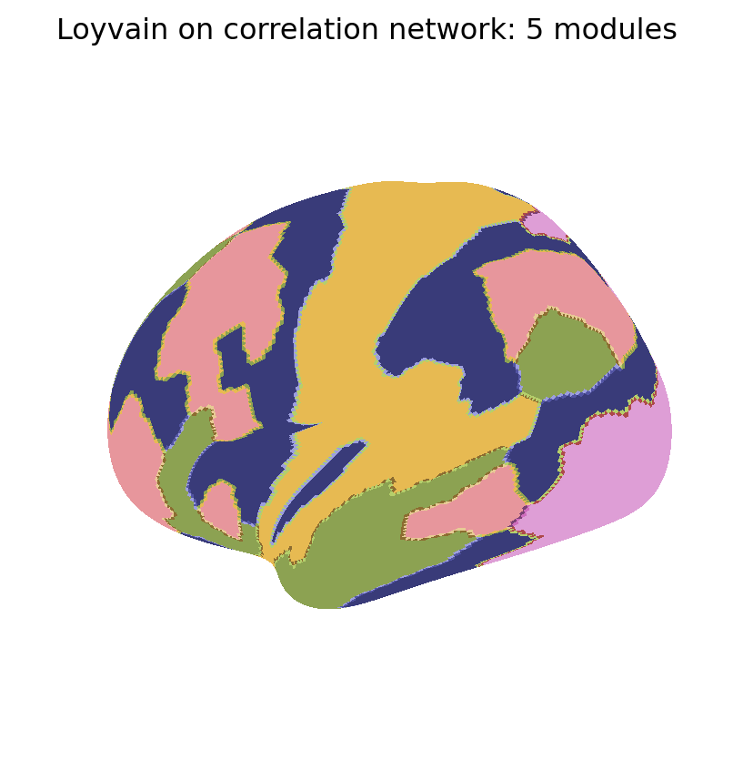
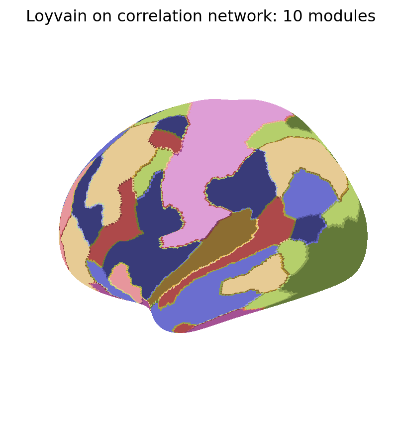
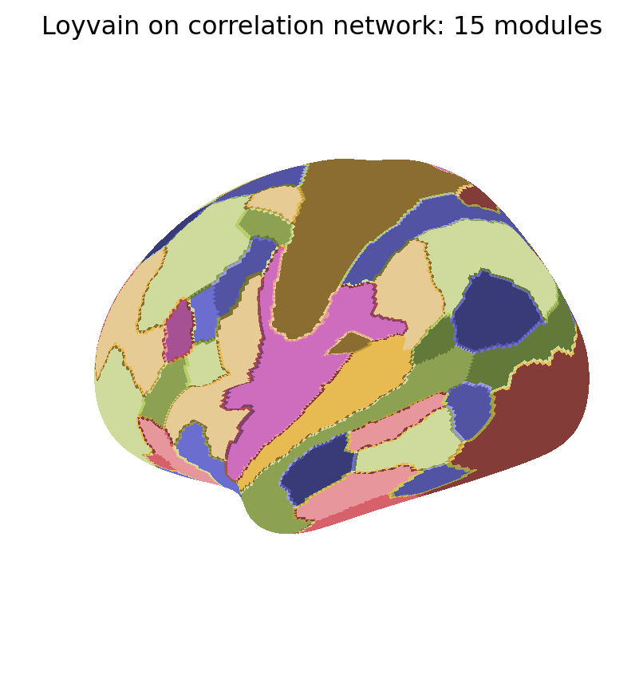
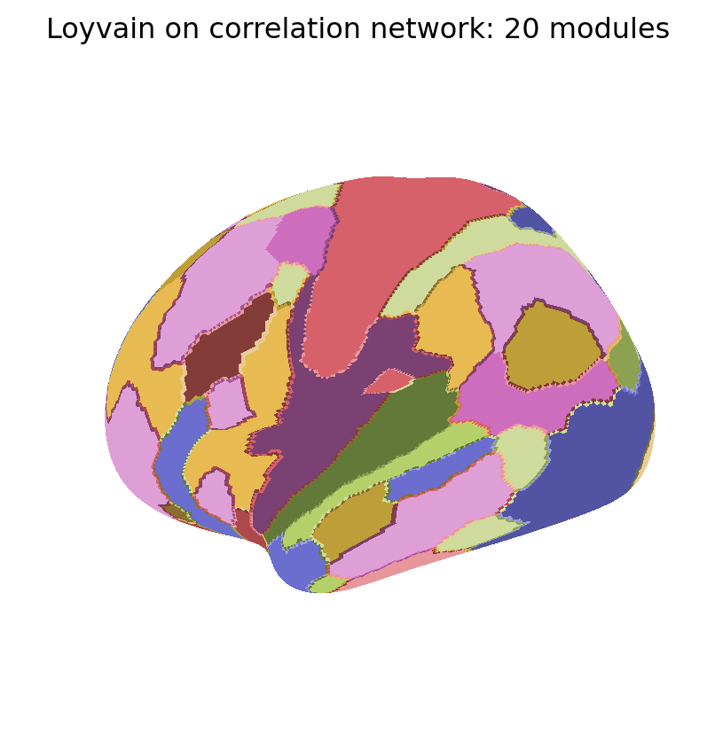
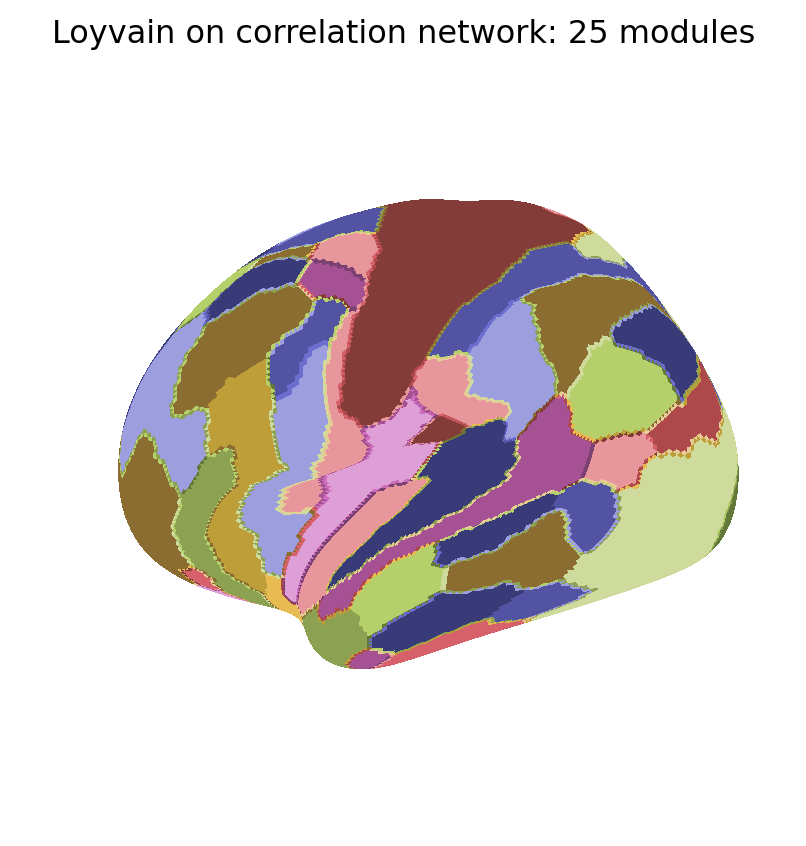

The Loyvain method is a fusion of Lloyd and Louvain methods, two classic algorithms for k-means clustering and modularity maximization, respectively. This method specifically interpolates between Lloyd and Louvain, and thus represents a unified algorithm for k-means clustering and modularity maximization.
Here, we compare the Loyvain method against classic k-means and spectral clustering methods on our example brain-imaging correlation networks.
File ‘abct_utils.py’ already there; not retrieving.
Note: you may need to restart the kernel to use updated packages.
Set up data and clustering similarity functions
We compare the performance of Loyvain across a range of cluster numbers. To do this, we first define the corresponding similarity or objective functions for each of these methods.
# Define clustering hyperparametersK = np.arange(5, 30, 5) # number of clustersrepl =10# number of replicatesdef kmeans_similarity(X, M):# distance = 0.0 similarity =0.0for u inrange(k): I = (M == u) # cluster indices ni = I.sum() # cluster size Xi = X[:, I] # cluster time series xi = Xi.mean(1, keepdims=1) # cluster centroid# distance += ((Xi - xi) ** 2).sum() # distance similarity += (Xi.T @ Xi).sum() / nireturn similaritydef spectral_similarity(C, M): similarity =0.0for u inrange(k): I = (M == u) # cluster indices similarity += C[np.ix_(I, I)].sum() / C[I].sum()return similarity
Run standard k-means and spectral clustering
We first run standard k-means and spectral clustering algorithms. Note that Loyvain maximizes the k-means objective on residual networks, and the spectral clustering objective (normalized cut) on the original networks. Accordingly, here we compare it to k-means clustering of time series after global signal regression, and spectral clustering of the original correlation networks.
np.random.seed(1)start_time = time.time()print("Running standard k-means and spectral clustering.")kmeans_lloyd_similarity = np.zeros(len(K))spectral_shimalik_similarity = np.zeros(len(K))for i, k inenumerate(K):print(f"Number of clusters: {k}") M_kmeans_sklearn = cluster.KMeans(n_clusters=k, n_init=repl).fit(Xg.T).labels_ M_spectral_sklearn = cluster.SpectralClustering( n_clusters=k, affinity='precomputed', n_init=repl).fit(C).labels_ kmeans_lloyd_similarity[i] = kmeans_similarity(Xg, M_kmeans_sklearn) spectral_shimalik_similarity[i] = spectral_similarity(C, M_spectral_sklearn)print(f"Time elapsed: {time.time() - start_time} seconds.")
Running standard k-means and spectral clustering.
Number of clusters: 5
Number of clusters: 10
Number of clusters: 15
Number of clusters: 20
Number of clusters: 25
Time elapsed: 87.64774417877197 seconds.
Run Loyvain k-means and spectral clustering
We now use the Loyvain method for direct k-means clustering and spectral clustering of correlation networks.
Running Loyvain k-means and spectral clustering.
Number of clusters: 5
Number of clusters: 10
Number of clusters: 15
Number of clusters: 20
Number of clusters: 25
Time elapsed: 3.911929130554199 seconds.
Visualize clustering results
We now show the maps of k-modularity clusters detected with the Loyvain method.
for i, Mi inenumerate(MKmod): fig_surf(Mi, f"Loyvain on correlation network: {K[i]} modules","tab20b", pmin=0, pmax=100)





Compare clustering similarities
Finally, we directly compare the clustering similarities of the Loyvain method to standard k-means and spectral clustering algorithms.